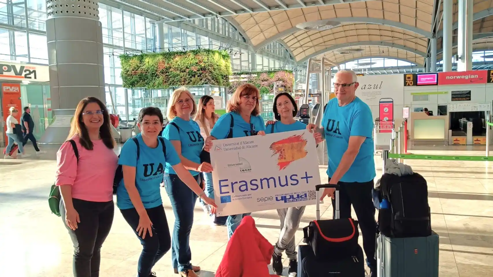

El programa Erasmus + celebra su primera reunión informativa
El Ayuntamiento de Dos Hermanas, a través de la Delegación de Promoción Económica e Innovación, celebró recientemente la primera reunión informativa con alumnos y alumnas seleccionados para participar en el programa Erasmus+ de prácticas en el extranjero.
El alumnado seleccionado, procedente de centros educativos de Formación Profesional de Dos Hermanas, realizarán sus prácticas de Formación en el Centro de Trabajo de 90 días de duración en varios países de la Unión Europea. En esta ocasión, los países que recibirán al alumnado procedente de Dos Hermanas son Italia, Alemania o Portugal, entre otros.
El IES Miguel de Molinos de Zaragoza inicia su andadura Erasmus+
El IES Miguel de Molinos de Zaragoza se ha sumado este curso a la aventura Erasmus+. Tras haber conseguido la acreditación del programa, el instituto ha puesto en marcha el primer proyecto llamado Ventanas al futuro.
A lo largo de este curso se van a organizar distintas movilidades de docentes y de estudiantes con el fin de seguir trabajando en la innovación educativa, la educación donde todos y todas tenemos cabida, la internacionalización del centro, y el aprendizaje dinámico y responsable.
“Hemos tenido la oportunidad de observar cómo se trabaja en Suecia, de conocer un sistema educativo de los más innovadores de Europa y que más invierten en educación (la mayor parte de los centros están financiados por los municipios y éstos destinan hasta un 40% de su presupuesto a la educación)”, explican desde el centro.